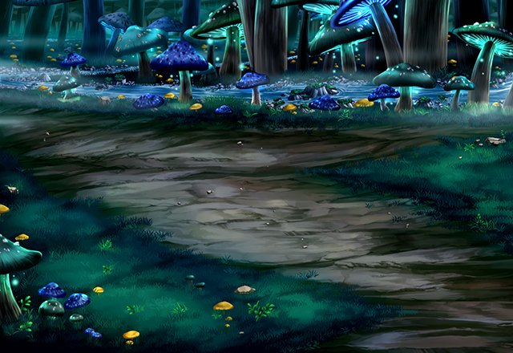

パリス
イシュグリアは生態系もエルガイアや グランガイアと少し違うようね。
パリス
生物学者とかがこれを見たら 調査をしたくなるのでしょうね？
パリス
まあ、今はそんな余裕は 無いのだけれど……。
パリス
調査と言えば、カルやセリアも調査のために 先行してこの地に来ているはずよ。
パリス
先行して動いた理由は聞いていないけれど ２人とも個人的な理由らしくて
パリス
２人ともまだ調査を行っているようだから このまま進めばどこかで会えると思うわ。
パリス
あの魔神とも出会ってるみたいだし、 何を話したのか聞いてみたいわね。
パリス
あなたの予想通り、もう１人召喚師が こちらに先行して来ているわ。
パリス
名前も出したくないような 下品な男がね……。
セリア
そんなこともわからないの？ 真っ暗で何も見えないという状況よ。
ルジーナ
どうして俺がこんな目に あわなくちゃならねーんだ！
セリア
騒いだってどうにかなるもんじゃ ないでしょ？
セリア
男のクセに細かいこと気にしてると ハゲるわよ。
ルジーナ
このバカ女！ ここを出たら覚えておけよ！
セリア
覚えておいてあげるから 早くルジくんも出口を探しなさいよ。
ルジーナ
クソッ！ そんなことはわかってるんだよ！